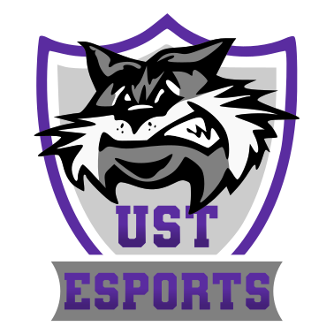
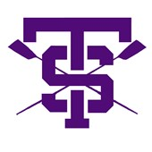

University of St. Thomas eSports Club: Board Member
-
Meeting once a week to discuss and compete in collegiate level League of Legends
-
Spreading awareness and recruiting new club members through advertisement and public relations
-
Organizing and managing large groups of players within self-run tournaments and events

University of St. Thomas Rowing Team: Varsity Club Athlete
-
Competing in collegiate level rowing regattas
-
Practicing 6 – 7 days a week throughout the school year to master rowing techniques and build team synergy
-
Volunteering at various charity organizations such as Feed My Starving Children